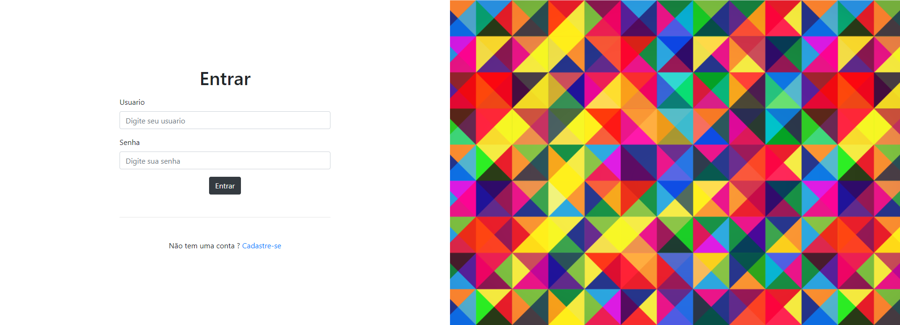

O que eu já desenvolvi ?
Egide

Blog

Olá, sou Izaque Liborio, tenho 24 anos e sou natural de São Paulo-SP
Minha maior realização até hoje foi uma viagem que fiz ao Japão, essa jornada ao outro lado do mundo provou a mim mesmo que sou capaz de fazer o quer que eu coloque na cabeça, a segunda maior foi fazer uma transição de carreira e entrar na área da técnologia, no inicio parecia impossível, difícil, mas aqui jas o CV em forma de site desenvolvido por quem acreditou que daria certo.
Tecnologias: Java | MySQL | Spring-boot | Hibernate | Angular | HTML | CSS | JAVASCRIPT